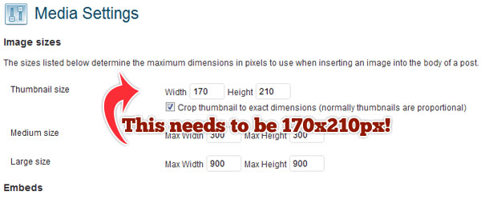
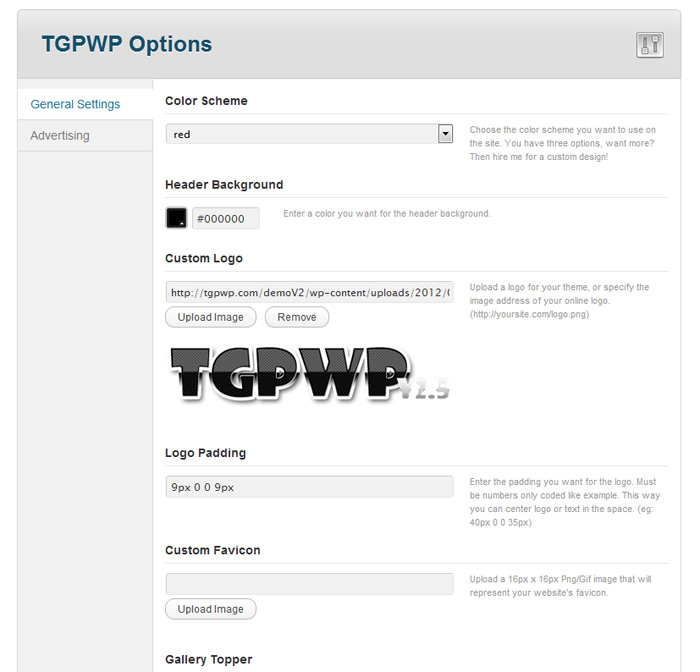
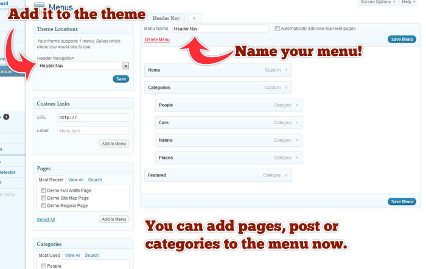
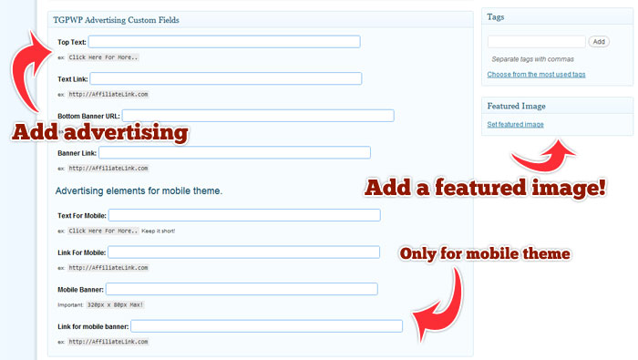

Released: 07/20/2012
By: Kurt
Email: webmaster@tgpwp.com
Website: www.TGPWP.com
Thank you so much for downloading my theme. This is really a labor of love for me. WordPress has always been my favorite CMS and I love to learn new things about it while creating my own theme. I also love the fact that webmasters like you are downloading my theme and using it on your blog. To see my theme in action on someone's site is super cool.
TGPWP is now in Version 2.8 and I have added a couple of new things to the theme. The biggest one is an all new theme options panel. This is a slick new way to control many of the features of the theme. You can also upload your logo right from the options panel. Make sure you read the description below to see what each feature controls.
Another big feature of the theme is the all new custom post type. With previous versions you had to select a category for the featured section. Now it is its own post type and you can set the post to redirect to any link you want. All of the details and settings are below, make sure you read them.
Is there more to come? You bet! I have some big plans for the new version of TGPWP so stay tuned. I recently updated my main site so you can check it out at the link on the left. I will also be adding some more stuff for you guys to buy like custom themes and layouts. Be sure to buy my mobile add on for TGPWP. Only $10 (Limited Time Sale) and your TGPWP blog will be mobile ready!
If you have any questions comments or you want to make a suggestion then visit my website below. I have email and a contact form that I will always be there to answer. Thanks so much for the support and a big thanks to all my beta testers for running me through the meat grinder!
First thing is make sure you download the theme from my website. I know some other sites might offer a direct download of this theme on their site, but they might add some malicious code. I have been burned a couple times by this. That’s why I always try and download the theme from the author’s website. Just to keep you safe. Unzip the zip or rar file and you will end up with three new directories.
You need to have the latest version of WordPress installed, which when I wrote this WordPress was at 3.4.2. They always update, so make sure you’re blogs are up to date. I have tested this theme on V3.4 and it worked just fine. Not sure about later versions than that. Not even sure why you would run a later version of WordPress.
To install the theme on your WordPress blog is pretty easy. If you have never installed a theme then make sure you read up on it. All you need to do is upload the entire "TGPWPV2.8" directory to your WordPress theme directory ie: wp-content/themes/. Then go into your WordPress dashboard and go to "Appearance - Themes", you will see the TGPWP theme at the bottom. Go ahead and click activate, after that you are ready to go. Simple isn't it?
The theme needs three plugin's to work. The first is Page Navi by Lester ‘GaMerZ’ which you can add via your plugin panel or upload the copy I have in the zip file. The second is WP-PostRatings also by Lester 'GaMerZ', this allows your visitors to now vote on the galleries and you can add a top rated widget as well. The last one is "WP-PostViews" again by Lester 'GamerZ', this will add a post view count to all of your galleries. Make sure all of the plugin's are up to date if you upload the ones in my Plugins Folder.
Some web masters are adding this new theme to their blog for the first time and already have post added. One big question I have been getting is how to size the images for use with my theme. I use a plugin called “Regenerate Thumbnails”, what this will do is re-crop all of your images to the size needed, 200x200px. If you are also using the Mobile Add-On then you will definitely need this plugin installed so all of your images get cropped for the mobile settings. Read more about that on the TGPWP Mobile instructions. If you are using an older version of TGPWP then this is a MUST plugin. You will need to crop all of your images again since this theme uses a totally different thumbnail size. Before you run this plugin, make sure you have set your media settings to 170x210px or it will not work. See the image below.

Welcome to the all new TGPWP admin panel. Once you have activated the theme the themes option panel will be in the sidebar under "Apperance". I have beefed up the themes options so I had to create a better admin area. Now you can upload your logo right from this panel and set the padding around it. Check below to see what each selection does.

Once you have all that added be sure to save the theme settings before you leave the page.
Go to the "Menu" tab in your appearance panel off of the WordPress dashboard. You need to have WordPress version 3.x to see this menu option. Create a new menu by clicking at the top of the right pane and calling it whatever you like. Now add what pages or categories you want to populate that menu. Once you save it you can now select the location of that menu on the TGPWP theme. Check out the image below for some more details. I like to create a custom menu option and call it "Categories" and then have all of my WordPress post categories under that. If you saw the demo then you will see how I have done it. Make sure you also create a "Home" menu option so visitors can go back to your index. There are two locations for menus on my theme, Header and Footer. You can use the Footer menu location for link trades or webmaster sections.

Now we get to the easy part, adding your image galleries and advertising. If you already have post then you may need to edit them a bit to work with my theme. You add gallery post just like you would normally, but you need to have a “Featured Image” set for that post. This is the image that is going to show up on the main page. This thumbnail will show up on the index, the search page and any other pages that calls for the post. If you already post then make sure you add a featured thumb or on the main page the image shows up blank on your main page, not good.
Now some web masters like to add a gallery by importing HTML code, but I like to use WordPress import gallery function. This way you can add your images and WordPress will crop them and you can add the gallery to your post. Make sure you have the media settings in WordPress for 170x210 or bad things will happen. I have everything set up for a 170x210 thumbnail. Remember if you are using this theme on a blog you already have post on then use the "Regenerate Thumbnails" plugin to re-crop all of your images.
Now we get to the part where you can make some money. To add advertising to a post or gallery as I like to call them is pretty easy. I have an advertising panel that will allow you to add banners and text links to your post. If you’re using the Mobile Add-on then you will also add banners and text links this way as well.
A new feature that I have added to Version 2.2 is if you don’t add a banner to the post then you will get a cool looking text link in its place. Before if you didn’t add a banner to the post then you got a broken image which looked ugly, not anymore. Don’t add a banner and the theme will just grab the link from the text link and create a creative text link below the gallery.
Please note, if you are not using the mobile add-on then don't enter any information into the fields. Nothing will happen, that will only work if you have the mobile theme installed.

Once you have activated the TGPWP theme in your widget admin area of WordPress you will see a new widget called “TGPWP Banner.” Simply drag this to the widget area on either the main page or post page or why not go with one on each. Open the widget and you will have an area to enter the banner URL and the link you want. You can also add a title and alt description. The widget and theme are set up for a banner that is 300x250 only. I have not tried any bigger than that. Most sponsors have that size in their selection.
I have also added one for adding a banner in the left sidebar as well. You will see that widget in the widget pool and what dimensions you need to have the banner set for. You can use a smaller banner, but do not use one that is bigger.
One of the newest features of this theme is the featured gallery section. In previous versions you selected a category, usually called “Featured,” to be the featured gallery. Now this section is all on its own. Adding galleries/post to this area is just like adding a regular post, but it has one more feature then the others, you can set this gallery to redirect to any URL you want. In previous versions of my theme I had a plugin that did this, but now the theme takes control of this. So let’s say you want to add some sponsor galleries that redirect to a hosted gallery from your sponsor. No problem, just add a title and a featured image and then make sure you set the URL you want, easy. This is a custom post type in WordPress so the galleries will not show up in the search results and they don’t have a custom category. That feature will show up in future versions so stay tuned.
If you're using my mobile theme, then please read. These featured galleries will not show up on a mobile device. The mobile theme is only set to show your galleries/post only. I might add it into the mobile theme, but right now it is just not shown at all.
A few of you have asked how do I have custom stars in my WP-Ratings plugin. If you have ever used WP-Ratings then you know the graphics of the stars are a little ugly. What I have done is did a little tweaking to the plugin file so that I can use better looking stars. Before they were transparent gif’s, now I have it set to use PNG’s were are a little higher quality graphics. If you want to get the tweaked version then visit my site and you can download the plugin I have tweaked. The only downside is if there is an update, you lose all the custom settings. I will continue to edit all the future versions and make them available on my site for download. How nice am I. Take a look at the sample images below.
Here are all the links to services I have used. Please check out the developers page for more information on their script and to donate to them. Please make sure you have the latest version of all your WordPress plugins to avoid problems.
I think I have covered everything. I have so many other features that I’m working on for future versions. I know a lot of you have been asking for an import function. This way you could easily add galleries to the site in a few clicks. I really wish I could get that done, but that is a little beyond my skills right now. Maybe in the not too distant future.
If you have something you want to see added to other versions then email me. Tell me how I can make your life easier, well I’m not a life coach, so tell me how I can make your blog better.